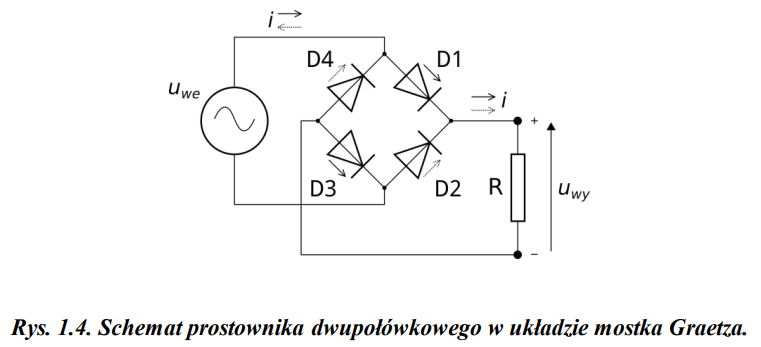
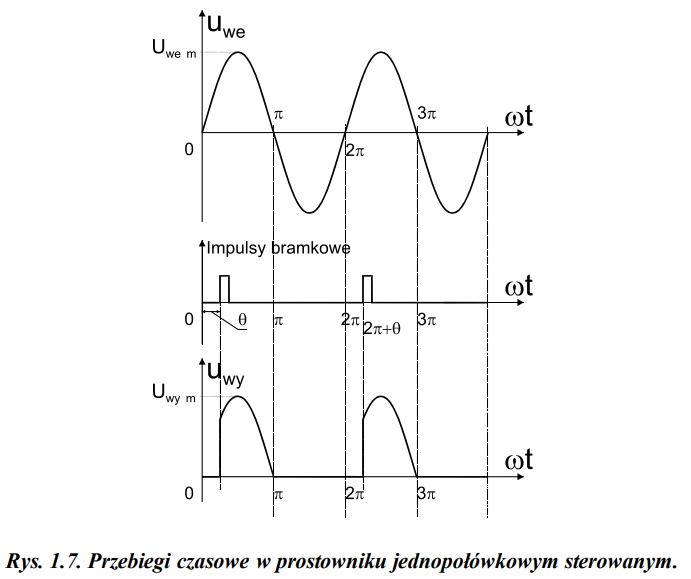
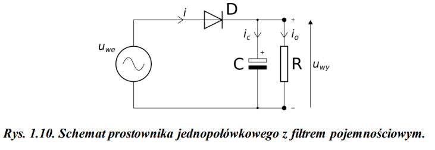
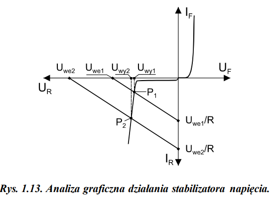

Schemat prostownika dwupołówkowego w układzie mostka Graetza:

Wykres napięcia wyjściowego dla prostownika jednopołówkowego sterowanego:

Diody
Działanie: Diody przepuszczają prąd tylko w jednym kierunku, gdy są spolaryzowane w
kierunku przewodzenia (wyższy potencjał na anodzie).
Zalety:
Prostota i niski koszt.
Wady:
Brak możliwości sterowania przepływem prądu.
Tyrystory
Działanie: Tyrystory również przepuszczają prąd tylko w jednym kierunku, ale wymagają
impulsu prądowego na bramkę, aby wejść w stan przewodzenia.
Zalety:
Możliwość regulacji wartości średniej napięcia wyjściowego poprzez zmianę kąta wyzwalania.
Wady:
Generują silnie zniekształcony przebieg napięcia wyjściowego, co wymaga stosowania filtrów o dużej
skuteczności.
Większa złożoność i koszt w porównaniu do diod.
Filtr pojemnościowy wygładza przebieg napięcia jednokierunkowego na wyjściu prostownika.
Zasada działania:
Podczas dodatniej półfali napięcia wejściowego, dioda przewodzi, ładując kondensator.
Gdy napięcie wejściowe spada, kondensator rozładowuje się przez obciążenie, utrzymując napięcie
wyjściowe na względnie stałym poziomie.
Im większa pojemność kondensatora (C) i rezystancja obciążenia (R), tym mniejsza amplituda tętnień
napięcia wyjściowego.

Diody:
Stosowane w prostownikach niesterowanych do przekształcania napięcia przemiennego na
jednokierunkowe.
Tyrystory:
Używane w prostownikach sterowanych do regulacji napięcia wyjściowego.
Znajdują zastosowanie w układach zasilających dużej mocy, sterowania prędkością obrotową silników i
energoelektronice.
Prostowniki niesterowane wykorzystują diody do przekształcania napięcia przemiennego na jednokierunkowe.
Prostownik jednopołówkowy:
Przeprowadza tylko dodatnie półfale napięcia wejściowego, co skutkuje dużymi tętnieniami i niską
wartością średnią napięcia wyjściowego.
Prostownik dwupołówkowy (mostek Graetza):
Wykorzystuje cztery diody do prostowania obu półfal napięcia wejściowego, zapewniając wyższą wartość
średnią napięcia wyjściowego i mniejsze tętnienia.
Prostowniki sterowane wykorzystują tyrystory, umożliwiając regulację wartości średniej napięcia
wyjściowego poprzez zmianę kąta wyzwalania.
Prostownik jednopołówkowy sterowany:
Tyrystor zastępuje diodę w prostowniku jednopołówkowym, a kąt wyzwalania reguluje moment włączenia
tyrystora w każdej dodatniej półfali.
Prostownik dwupołówkowy sterowany (2T-2D):
W układzie mostkowym Graetza diody są zastąpione dwoma tyrystorami i dwiema diodami, co pozwala na
regulację napięcia wyjściowego dla obu półfal.
Analizę graficzną pracy stabilizatora napięcia przedstawia poniższy rysunek:

Zasada działania:
Charakterystyka prądowo-napięciowa rezystora R i diody Zenera przecinają się w punkcie pracy
stabilizatora.
Współrzędne punktu pracy określają napięcie wyjściowe i prąd diody Zenera.
Zmiana napięcia wejściowego powoduje przesunięcie charakterystyki rezystora, ale napięcie na diodzie
Zenera pozostaje względnie stałe, zapewniając stabilizację napięcia wyjściowego.
Współczynnik stabilizacji (kS) określa jakość stabilizacji i jest tym mniejszy, im mniejsze są
zmiany napięcia wyjściowego w stosunku do zmian napięcia wejściowego.